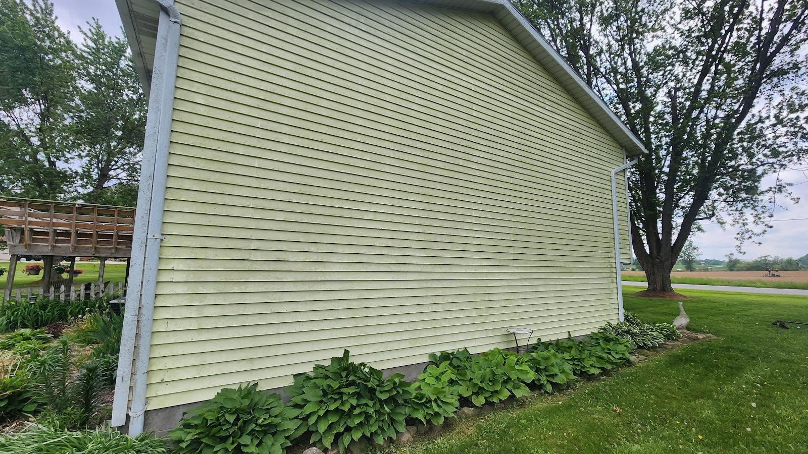
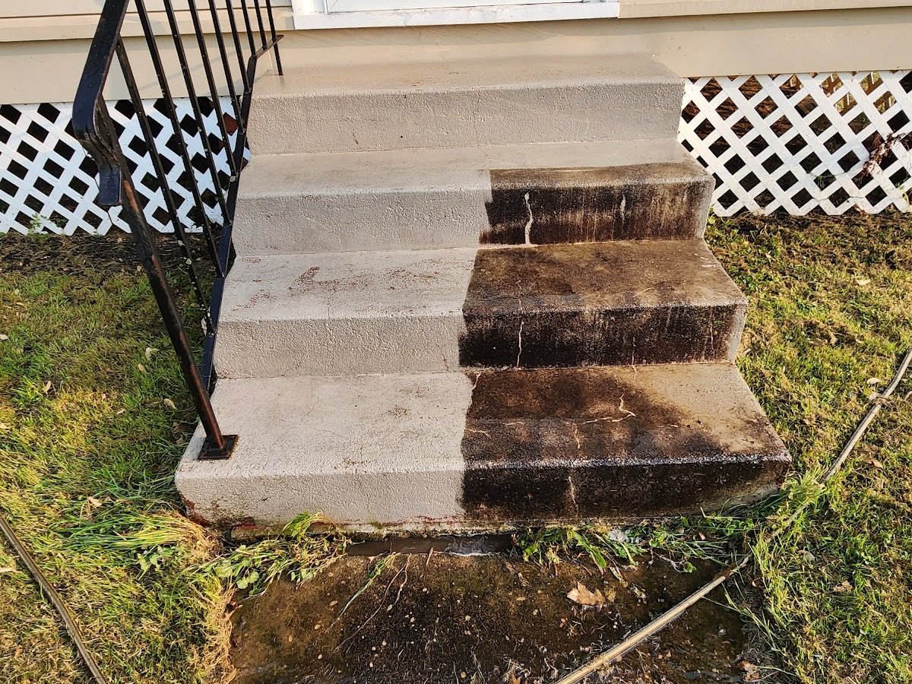
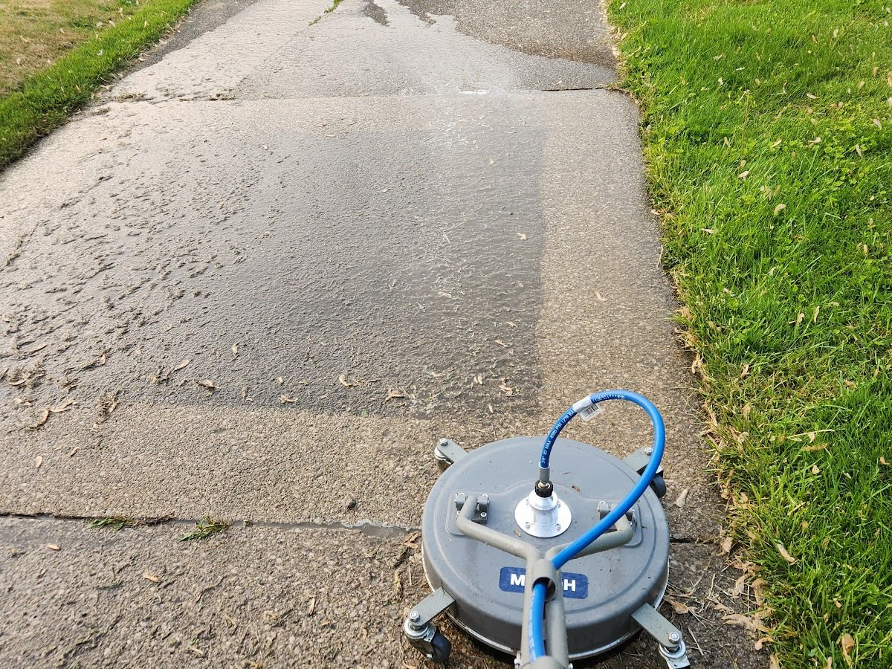
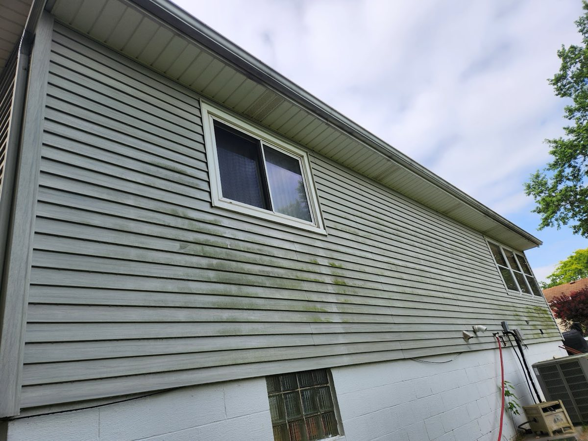
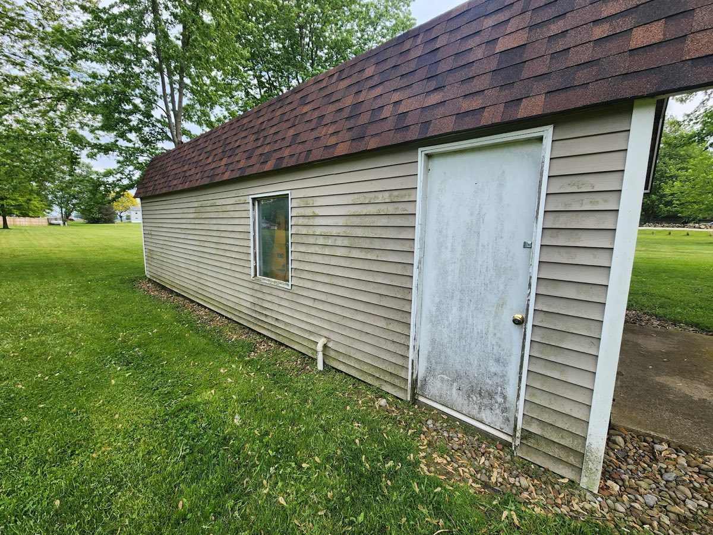
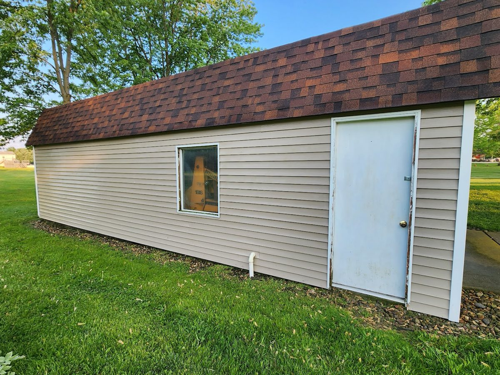
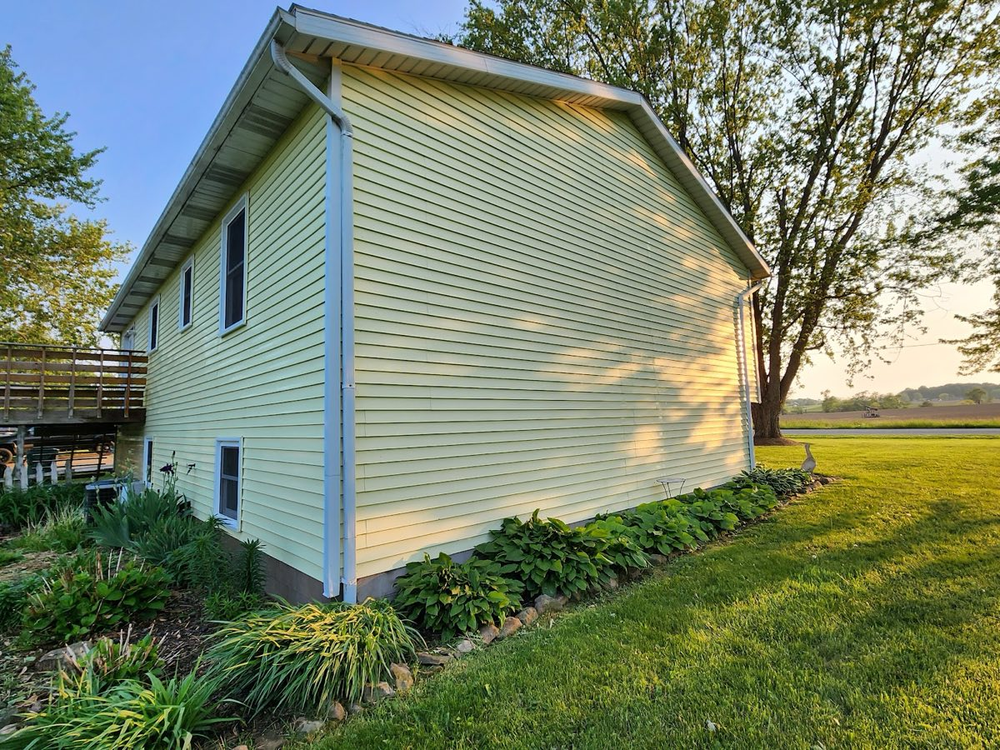
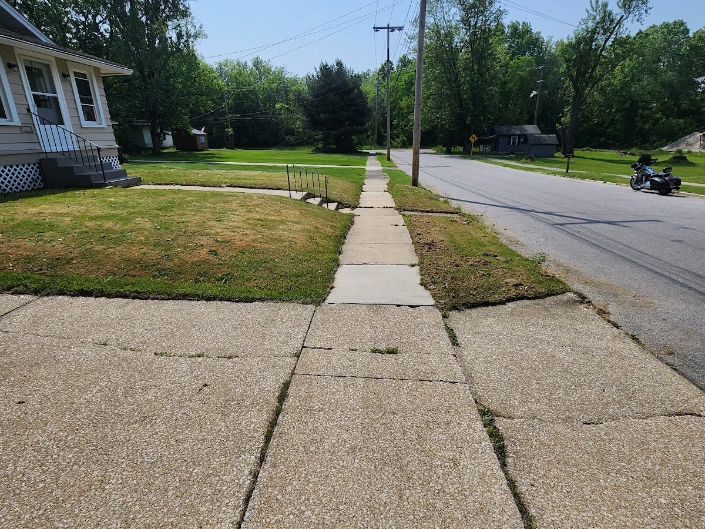

House & Soft Washing
A low-pressure soft wash that lifts algae, mildew and dirt from siding, brick and stucco without forcing water behind the surface.
Siding · Brick · Stucco
Owner-operated exterior cleaning that treats your home like our own — meticulous results, careful around your landscaping, done right the first time.
From a gentle whole-house soft wash to caked-on driveway grime, every surface gets the right pressure and the right care. No cutting corners, no rushing.
A low-pressure soft wash that lifts algae, mildew and dirt from siding, brick and stucco without forcing water behind the surface.
Siding · Brick · StuccoSurface-cleaned driveways, sidewalks and patios — even, stripe-free results that pull out years of dirt, oil and organic staining.
Driveways · Walkways · PatiosGentle, low-pressure treatment that removes the black streaks and moss from your roof — never the high-pressure blast that can strip and damage your shingles.
Shingle · MetalWood and vinyl decks, railings and fencing cleaned at a pressure that brightens the surface and prepares it for sealing — without splintering or gouging.
Wood · Vinyl · CompositeClearing and brightening clogged, streaked gutters so water flows where it should and your fascia stays protected — inside and out.
Clear · BrightenCaked-on steps, retaining walls and outbuildings brought back to life. If it's outside and it's filthy, ask — we'll tell you straight whether we can clean it.
Steps · Walls · OutbuildingsCustomers tell us the difference is the detail — the spots other washers skip are exactly the ones we go back over.
Plants, beds and outdoor fixtures are protected, not blasted. We work clean and leave your landscaping the way we found it.
Soft wash for siding and roofs, controlled pressure for concrete and wood — matched to the material so nothing gets damaged.
Fast to reply, clear on pricing before we start, and straight with you about what a surface needs. You always know what you're paying for.
"I've had other companies do the same work and nothing compares to what Matt the owner can do. An amazing job — honest, respectful, and prices are great."— William A., from our Google reviews
No pressure, no runaround. Just a clear path from your first call to a finished, spotless exterior.
Tell us what you'd like cleaned. A quick photo or two helps us understand the job.
You get a clear, up-front price — no surprises and no obligation.
We arrive on time, protect your property, and clean with the right method for each surface.
We walk it with you. It's not finished until the result is one you're glad you called for.
Every photo here is our own work around Orrville and Wayne County — siding, concrete and steps brought back to clean.







A perfect 5.0 across 15 reviews. Here's why people keep recommending us.
"Does an amazing job — I can't stress enough the respect they give you and how honest they are. Prices are great. I've had other companies do the same work and nothing compares to what Matt the owner can do."
"Matt did a high quality job cleaning our house! He was very responsive when I contacted him about pricing and was eager to get going. He did a great job making sure he was careful of our landscaping."
Based in Orrville and cleaning homes across Wayne County and the surrounding Northeast Ohio communities. Not sure if you're in range? Just ask — if we can get to you, we will.
Pressure washing uses high-pressure water and is right for hard surfaces like concrete driveways and walkways. Soft washing uses low pressure with cleaning solutions and is the safe choice for siding, roofs and anything that could be damaged by force. We match the method to the surface so your home gets clean without getting harmed.
Protecting your property is part of the job. We take care around beds, plants and outdoor fixtures — it's one of the things our customers mention most. We leave your landscaping the way we found it.
Call or message us at (330) 347-4161 with what you'd like cleaned — a couple of photos help. We'll give you a clear, up-front quote with no obligation. You'll know the price before we start.
We're based in Orrville and serve Wayne County and the surrounding Northeast Ohio communities, including Wooster, Dalton, Smithville, Apple Creek, Kidron and more. If you're nearby and not sure, just ask.
For most homes in our climate, a yearly exterior wash keeps algae, mildew and dirt from building up and protects your siding and roof over time. Shaded or north-facing surfaces sometimes benefit from a bit more often — we'll give you an honest recommendation for your home.
Get a free, no-pressure quote from the team Orrville trusts to do it carefully and do it right. We'll tell you straight what your surfaces need.